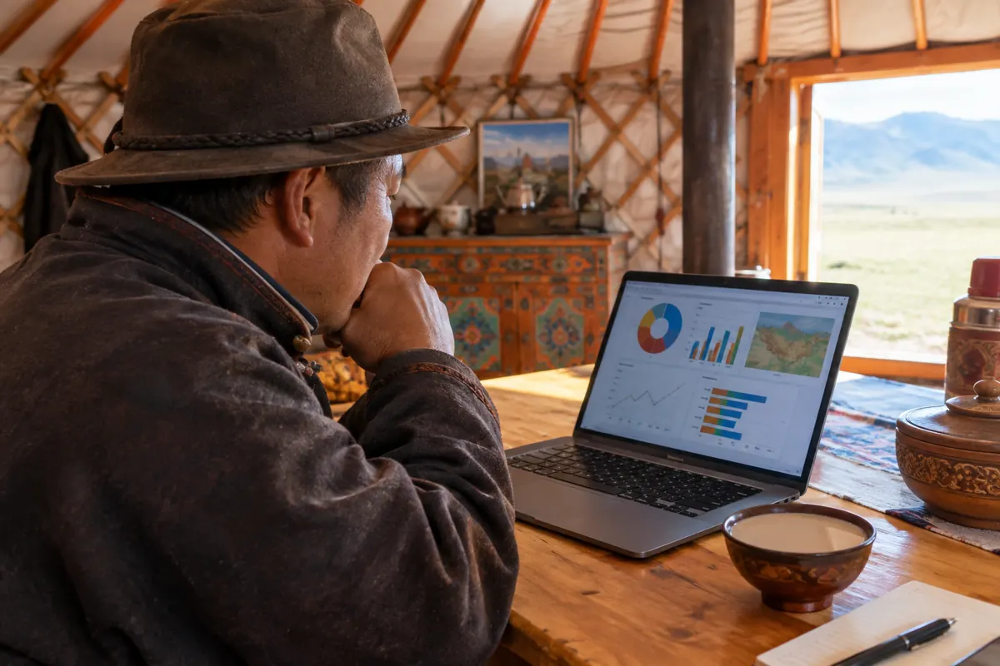

Батерейгүй. Гэхдээ байршлыг харуулна.
GeoNFC тагт батерей байхгүй: уншуулах мөчид эрчим хүчээ утаснаас авдаг тул цэнэглэх шаардлагагүй, хэзээ ч дуусахгүй. Уншуулсан даруйд тухайн малын байршил газрын зураг дээр гарч ирнэ.
Хүйтэн, шороо, чийгэнд тэсвэртэй. Эвдэрч гэмтэх хөдөлгөөнт эд анги байхгүй.

Малчны өөрийн утас. Апп суулгах шаардлагагүй.
Утсаа таг руу ойртуулахад малын хуудас шууд нээгдэнэ. Малчин тэндээ өдрийн сүү, тэжээл, хээлтүүлэг, төллөлт, зураг бүртгэнэ. Сүү, хээл, төлийн бүртгэлийг сүлжээгүй газар ч оруулна.
Хуудас нь хөдөө ажилладаг малчинд зориулагдсан: том бичиг, том товч, бээлийтэй ч дарж болно.

Ферм бүр өөрийн тусдаа админтай.
Нэг ферм зөвхөн өөрийн малыг харна. Хөрш ферм таны малыг харах боломжгүй — энэ бол тохиргоо биш, системийн үндсэн хязгаарлалт.
Малчин зөвхөн өөрийн малыг, ферм админ фермийнхээ бүх малыг, админ өөрийн хариуцсан фермүүдийг хардаг.
| Мал | Сүү | Вакцин | Төлөв |
|---|---|---|---|
| YT-008000 | 9.4 л | 2026/03/01 | Хэвийн |
| YT-008001 | 11.2 л | 2026/06/12 | Хэвийн |
| YT-008002 | — | хэтэрсэн | Вакцин |
Уншуулах бүрд хаана байсан нь үлдэнэ.
Таг уншуулсан газар, огноо, цаг өөрөө хадгалагдана. Мал хэзээ, хаана байсныг газрын зураг дээр хожим хараарай.
Товчийг дарж туршаад үзээрэй.
Хээлтүүлгээс төллөлт хүртэл нэг дор.
Хээлтүүлэг, хээл шалгалт, төллөлт, хээл хаялтыг бүртгэнэ. Систем төллөх огноог автоматаар таамаглана: сарлаг ~258, үхэр ~283, адуу ~340 хоног — тухайн малын болон фермийн өмнөх төллөлтөөр улам нарийвчлагдана.
Самбарт 7 болон 30 хоногт төллөх мал, хээлтүүлээгүй мал тусдаа жагсаалтаар харагдана. Төл таг зүүмэгц эхтэйгээ автоматаар холбогдоно.

Хэн нэгэн уншуулмагц танд мэдэгдэнэ.
Малчин малын хуудасны "Алга болсон гэж мэдэгдэх" товчоор мэдэгдэнэ. Түүнээс хойш тагийг хэн нэгэн уншуулбал эзэмшигч, ферм админд хэзээ, хаана уншуулсан нь газрын зургийн холбоостой Telegram мессежээр шууд ирнэ.
Олсон хүн "Эзэмшигч рүү залгах" товчоор шууд залгана — дугаар хуудсан дээр бичигдэхгүй. Мал олдмогц "Олдсон — буцаж ирсэн" дарахад анхааруулга арилна.
Тайлан нэг товчоор. Түүх хэзээ ч арилахгүй.
Самбараас мал сүрэг, сар бүрийн сүү, вакцин, хээл төлийн бүртгэлийг Excel файлаар татна — малын эмч, банк, тооллогод бэлэн.
Мал зарах, бэлэглэх, өвлүүлэхэд эзэмшлийн түүх хадгалагдана. Өөр ферм рүү шилжвэл бүх түүх нь хамт явна. Хэн, хэзээ, юуг өөрчилсөн нь "Түүх" хэсэгт үлдэнэ.
